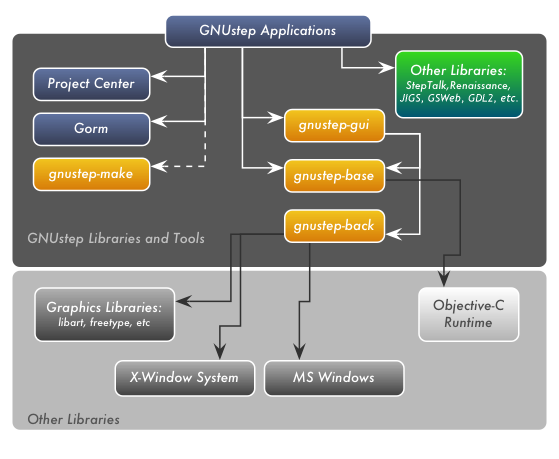
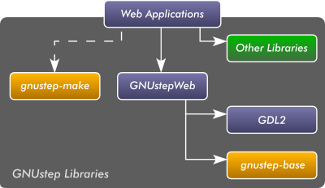

GNUstep Library Map
|  |
This map gives a visual description of how the various GNUstep libraries work together. Libraries inside the dark-grey area are actual GNUstep libraries and tools.
Read the Developer documentation for more information on the libraries.
GNUstepWeb Map
Below is a map showing the relationship of GNUstepWeb to other libraries
|  |